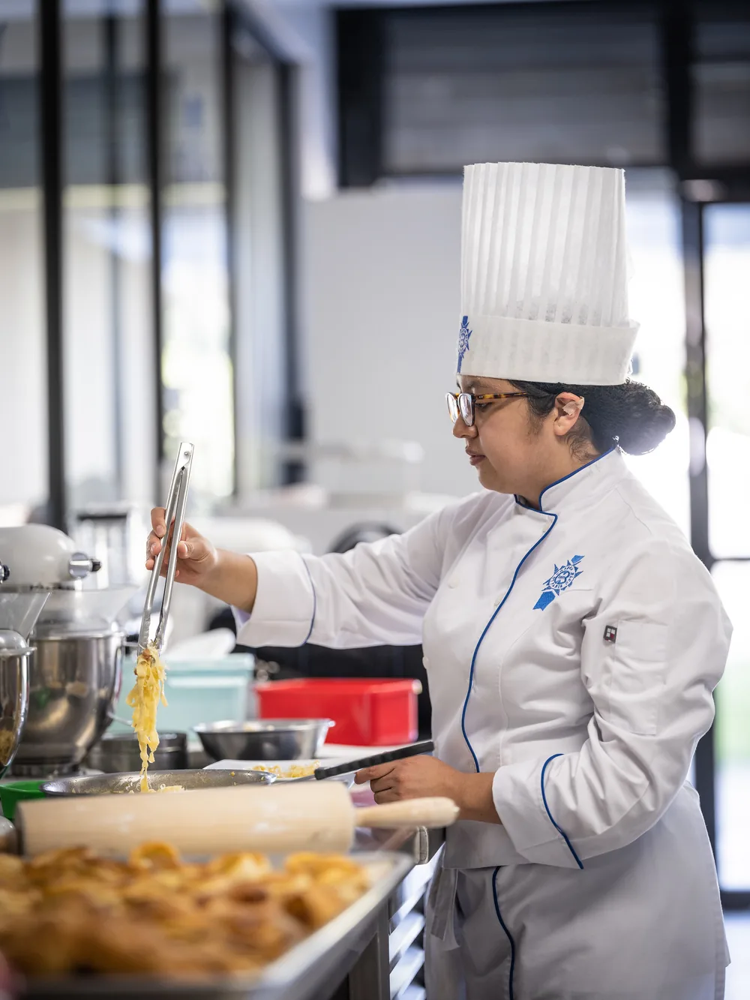
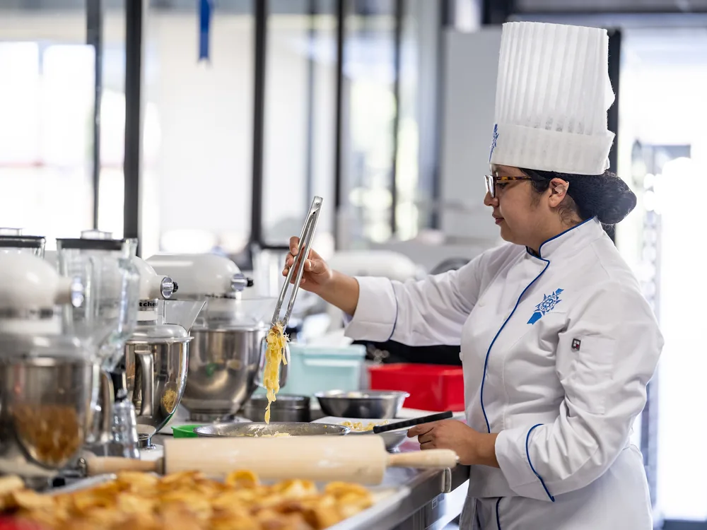
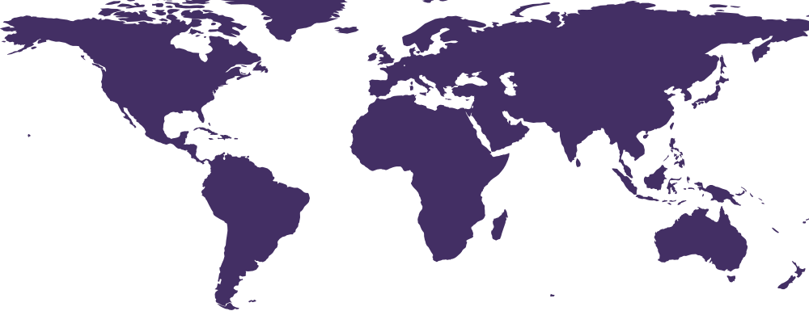
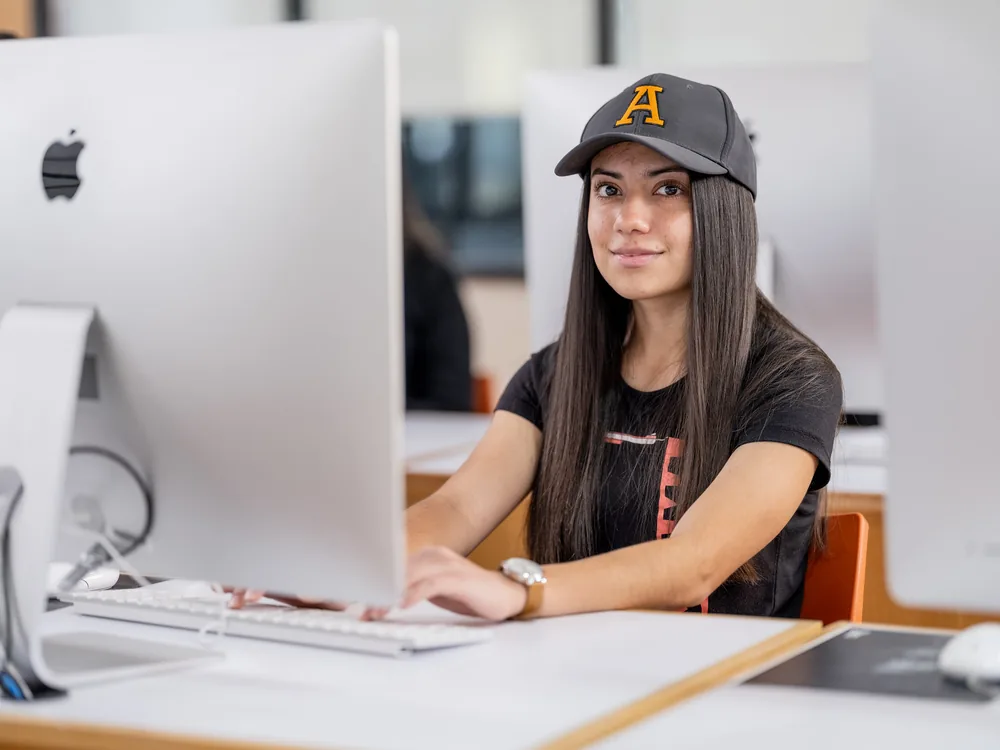

Única alianza con Le Cordon Bleu en México
Somos la única universidad del país con alianza estratégica con Le Cordon Bleu, Francia.
Turismo, Gastronomía y Hospitalidad
Imagina. Planea. Prepara.
¿Es para ti?
Si te reconoces en lo siguiente, la Gastronomía puede ser tu lugar.
Te apasiona la cocina, la creatividad y la innovación culinaria.
Sueñas con una formación internacional, reconocida en cualquier parte del mundo.
Quieres emprender o liderar tu propio proyecto gastronómico.
Te llama viajar, conocer otras culturas y trabajar en el extranjero.
En la Anáhuac no solo aprenderás a cocinar: formarás las habilidades de gestión, creatividad y emprendimiento para liderar cualquier negocio de alimentos y bebidas.
¿Por qué la Anáhuac?
No solo dominarás la técnica: practicarás en cocinas reales, con chefs y con visión de negocio desde el primer semestre.
Somos la única universidad del país con alianza estratégica con Le Cordon Bleu, Francia.
Vives un año de experiencia real en el sector gastronómico, nacional o internacional, con valor curricular.
Conoce con quién practicasPracticas en ocho cocinas modernas (cuatro en cada campus), salones de cata, laboratorio de mixología, laboratorio de cocina de vanguardia y el Viñedo Anáhuac en Querétaro.
Cada año, participamos en la competencia culinaria Young Chef Olympiad en India, además de realizar viajes académicos internacionales, como nuestra participación en el festival Gastronomika en San Sebastián, España.
Programa con acreditación nacional CIEES y certificación internacional tedQual de la Organización Mundial del Turismo (UNWTO).
Combina técnicas culinarias de la mano de chefs expertos e integra materias de costos, mercadotecnia, gestión de talento y emprendimiento. Saldrás preparado para cocinar y dirigir.
Prepárate para ser el chef que quieres ser y la persona que quieres llegar a ser. Nuestro Modelo Anáhuac integra tu carrera en tres bloques —Profesional, Anáhuac e Interdisciplinario— para que desarrolles una visión integral y estés listo para crear, liderar y emprender en la industria gastronómica.
Perfil de egreso
8 Semestres (4 años)
342 Créditos totales

Plan de estudios
minor de vinos disponible con tus electivas profesionales
El corazón de tu carrera. Aquí desarrollas la técnica culinaria y la visión de negocio, cursas tus dos semestres de prácticas profesionales y sigues la ruta de liderazgo y emprendimiento. Además eliges tus Minors —diplomas profesionales universitarios— como el minor de vinos.
El sello que nos distingue. Un espacio de autoconocimiento, ética y sentido de vida que te forma como persona íntegra y como líder de acción positiva, consciente de su vocación y de su impacto en los demás.
Sales de tu carrera para entender el mundo real. Cursas asignaturas de otras disciplinas y conectas saberes que hoy el entorno profesional exige integrados, ampliando tu visión más allá de tu área de estudio.
Campo laboral
Como egresado de Gastronomía de la Anáhuac puedes trabajar en restaurantes, operadoras de alimentos, empresas banqueteras, pastelerías y bares; emprender tu propio negocio gastronómico; o dedicarte a la investigación, la educación, la consultoría y el desarrollo de productos en la industria de alimentos y bebidas.


Obtén un título oficial por parte de la Universidad Anáhuac México y puedes obtener un Bachelor por la Le Cordon Bleu, Francia.
Adicional tienes la posibilidad de obtener certificaciones como:
Instalaciones y campus
La licenciatura es presencial y practicas en cocinas propias en ambos campus. Elige el que mejor te quede: los dos comparten la misma comunidad y experiencia Anáhuac.
Av. Universidad Anáhuac 46, Lomas Anáhuac, Huixquilucan, Estado de México.
Cuatro cocinas modernas y laboratorio de mixología.
Conoce el campusAv. de los Tanques 865, Torres de Potrero, Álvaro Obregón, Ciudad de México.
Cuatro cocinas modernas y laboratorio de cocina de vanguardia.
Conoce el campusAmbos campus cuentan con salón de cata de vinos; además, tienes acceso al Viñedo Anáhuac en el estado de Querétaro.
Leones Anáhuac que han transformado sus vidas con nosotros
Docencia y colaboradores
Aprendes de chefs y profesores activos en la industria, y practicas en instituciones y destinos gastronómicos líderes del mundo.
Director
Coordinadora Académica
Coordinadora de Promoción

Desliza el mapa para ver todos los destinos.
Destinos donde han realizado prácticas alumnos de la Facultad de Turismo y Gastronomía.
Siguiente paso
Avanza a tu ritmo: explora costos y apoyos, revisa fechas, inicia tu admisión o habla con un asesor.
Calcula la inversión de tu licenciatura y conoce las opciones de pago.
CotizarComienza tu proceso 100% en línea en solo 6 pasos.
EmpezarConsulta el calendario de exámenes de admisión a lo largo del año.
ConsultarDescubre las becas y apoyos económicos disponibles para estudiar aquí.
Ver apoyosResuelve tus dudas con un asesor preuniversitario, por campus.
ContactarPreguntas frecuentes
La Licenciatura en Gastronomía dura 8 semestres, es decir, 4 años, en modalidad presencial.
Cursarás materias como Técnicas y aplicaciones culinarias, Pastelería, Cultura gastronómica de México e internacional, Evaluación sensorial, Costos de alimentos y bebidas y Fundamentos de cata de vinos, entre otras.
La Universidad Anáhuac México es la única universidad del país con alianza estratégica con Le Cordon Bleu, Francia, e imparte la Licenciatura en Gastronomía en Campus Norte y Campus Sur.
Sí. Cursas dos semestres de prácticas profesionales con valor curricular, en el sector gastronómico nacional o internacional.
Obtienes el Bachelor in Gastronomy con reconocimiento internacional y diplomas parciales de Le Cordon Bleu a lo largo de la carrera.
Puedes trabajar en restaurantes, pastelerías, empresas banqueteras y bares; emprender tu propio negocio gastronómico; o dedicarte a la consultoría, la investigación y la docencia.
Puedes calcular tu colegiatura y conocer opciones de beca en nuestro cotizador.
*Beneficio en la Anáhuac México: el pago de tu colegiatura ya incluye los insumos, uniformes, maletín de cuchillos y maletín de copas.
Mucho más que solo una Universidad.
Conoce por qué vivirás una experiencia universitaria única con nosotros.
Conoce la experiencia AnáhuacDesarrolla las habilidades, conocimientos y experiencia que necesitas para construir un perfil integral. Nuestro modelo educativo integra formación profesional, intelectual, humana, social y espiritual.
Amplía tu experiencia con intercambios, convenios y opciones académicas que amplían tu perspectiva y enriquecen tu formación dentro y fuera del aula.

Haz deporte, participa en actividades culturales, involúcrate en proyectos sociales y forma parte de una comunidad activa.
Disfruta de espacios creados para tu desarrollo integral: deportes, salud, innovación y recursos únicos que encontrarás en la Universidad Anáhuac.


Solicita información
Cuéntanos qué te interesa y te enviaremos el material directamente a tu correo o WhatsApp. No recibirás la llamada de un asesor; si prefieres hablar con alguien, escríbenos desde «Elige el siguiente paso».